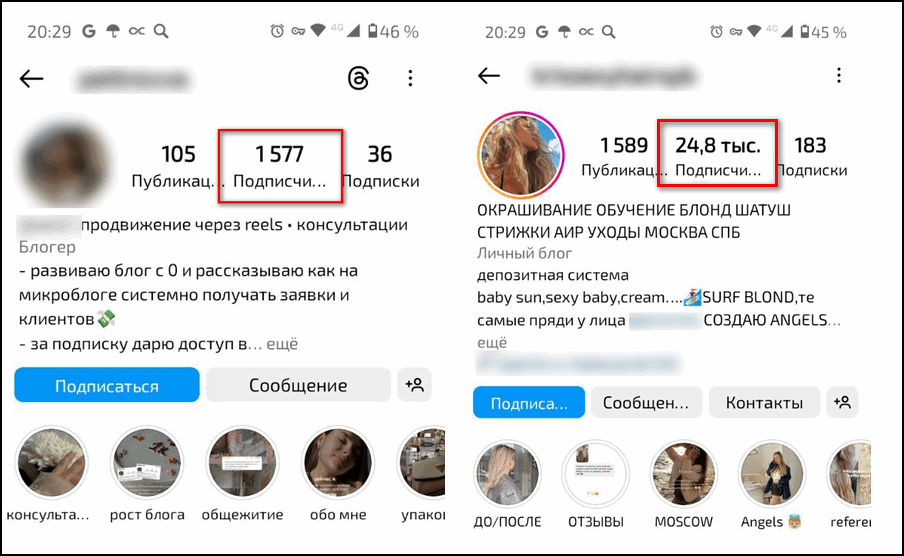
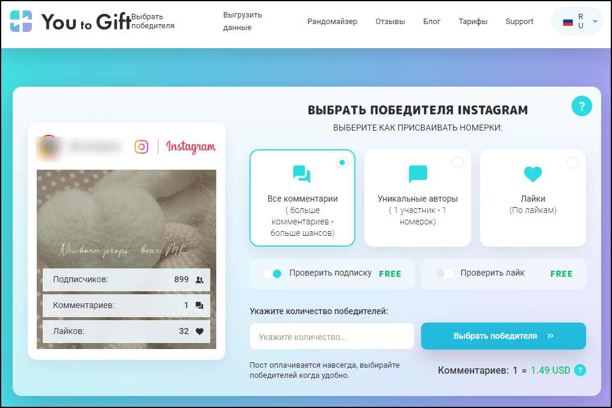
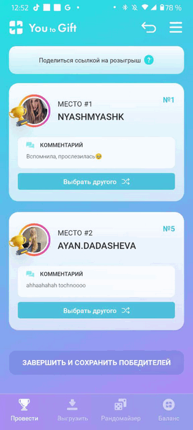
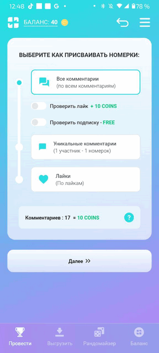
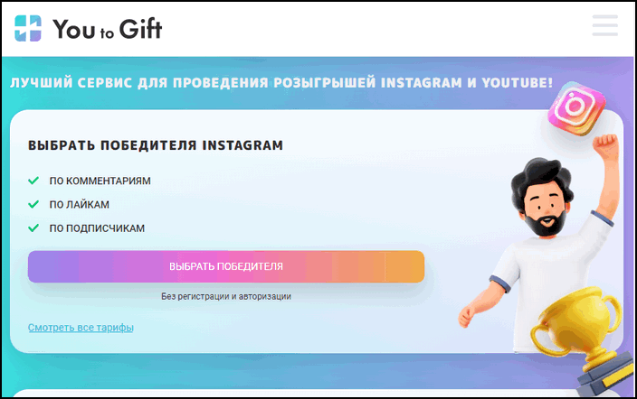
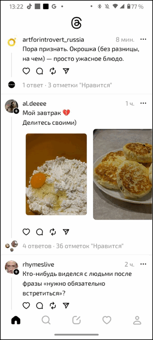
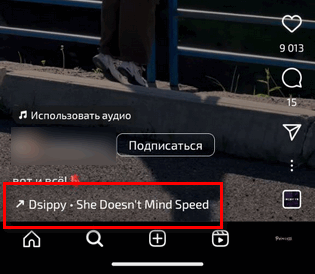
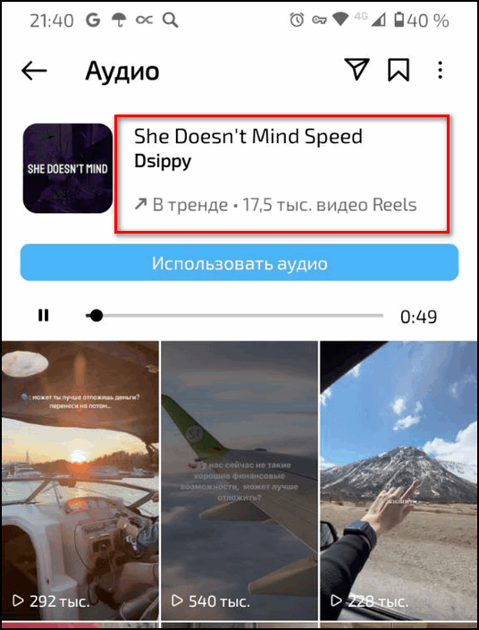

Как набрать аудиторию в Инстаграме: 10 рабочих способов

- Прирост аудитории в Инстаграме*: чем обусловлен
- ТОП-10 способов привлечения подписчиков
- №1 Конкурс с победителями
- №2 Используем Threads для поиска аудитории
- №3 Масслайкинг и массфолловинг
- №4 Повышаем качество контента
- №5 Reels и музыка в ТОПе
- №6 Анализ конкурентов
- №7 Хештеги и геометки в Инстаграме*
- №8 Реклама у блогеров
- №9 Очистка страницы от ботов и неактивных
- №10 Бесплатные материалы от эксперта
- Аудитория не приходит: основные ошибки
Набрать аудиторию в Инстаграме* в 2025 проще, чем раньше. Появились новые разделы, которые помогут в продвижении и поиске новых подписчиков.
Прирост аудитории в Инстаграме*: чем обусловлен
Чем больше подписчиков, тем активнее блог. Это знает каждый блогер, поэтому прирост аудитории – основная и постоянная задача. Чтобы привлечь новых фанатов, нужно использовать все разделы в социальной сети, работать над повышением качества контента и пробовать новые форматы. На начале большинство используют накрутку, в умелых руках это дает хорошие результаты. Почему один блог получает много подписчиков, а другой нет:
- новые форматы. Автор одного аккаунта регулярно пробует что-то новое;
- спорные темы. Отношения, стиль жизни, доход – то, что вызывает больше всего обсуждений в Инстаграме*;
- увеличить аудиторию в Инстаграме* помогут розыгрыши и конкурсы, можно взять готовые идеи для розыгрышей;
- загружать Рилсы увеличивая количество их просмотров;
- обратная связь. Подписчикам нравится, когда владелец блога отвечает на их вопросы и даже вступает в спор.

Чем больше подписчики заинтересованы в контенте, тем чаще публикация появляется в рекомендациях, поэтому перед началом удалите плохих подписчиков, которые не проявляют активности и набирайте только целевых. И те, кому интересен блог – будут отвечать на посты: видео или фото материалы.ТОП-10 способов привлечения подписчиков
Чтобы набрать аудиторию в Инстаграме* в 2025, нужно задействовать все сферы. Чаще размещать Reels, пробовать дополнительные социальные сети и регулярно добавлять Истории. 10 способов, которые помогут:
- Набрать аудиторию в Инстаграме* с нуля помогут конкурсы и розыгрыши.
- Новая социальная сеть
- Регулярная публикация
- Массовая подписка и лайки.
- Повышение качества контента.
- Анализ конкурентов и проработка ошибок.
- Добавление хештегов и геометок.
- Реклама у блогеров.
- Убрать с профиля ботов и неактивных подписчиков.
- Предложить аудитории бесплатные материалы от эксперта.
Большинство способов можно комбинировать и задействовать для привлечения новых подписчиков. Например, регулярно публиковать Reels с музыкой в ТОПе и одновременно с этим подписываться на потенциальную аудиторию.
№1 Конкурс с победителями
С помощью розыгрышей и конкурсов можно набрать дополнительную аудиторию и привлечь новую целевую. Особенно с «вкусными» призами: бесплатный курс, техника, денежное вознаграждение. Чтобы определить победителя и провести конкурс без проблем, можно обратиться к сервису YouToGift. С его помощью можно выгрузить базу потенциальных клиентов, рандомайзером определить номер или просто подключить к конкурсному посту.

Фишкой сервиса является наличие мобильных приложений для телефонов:- Андроид;
- Айфон.
Как работать с сервисом на примере мобильного приложения:
- Зайти в YouToGift – авторизоваться с помощью любой социальной сети.
- Скопировать ссылку на публикацию, которую нужно проверить.

- Указать тип проверки: по лайкам, подписчикам, комментариям.

- Подождать, пока сервис обработает запрос и покажет победителя.
Использовать YouToGift можно с мобильной и компьютерной версии. Пользователь получает несколько первых проверок, которые можно применить на разные аккаунты.
Сервис генерирует список победителей, учитывая параметры: уникальные комментарии или лайки. При выборе приложение предложит запустить запись экрана, чтобы опубликовать снятое видео в социальную сеть. Таким способом пользуются многие организаторы, чтобы подтвердить отсутствие мошенничества или подставных участников.

Также организатор может поделиться ссылкой на розыгрыш, если не хочет размещать скриншот или желает дополнительно подтвердить «прозрачность» события.№2 Используем Threads для поиска аудитории
Набрать целевую аудиторию поможет новая социальная сеть, которая привязана к аккаунту в Инстаграме*. К Threads можно подключиться с помощью своего профиля, подтвердив авторизацию. Переносится биография, аватарка. Особенность этой социальной сети в текстовом формате – пользователи обмениваются краткими сообщениями, могут оставлять ветки писем. Как подключиться к Threads и продвинуть свой аккаунт в Инстаграме*:
- Зайти в Play Market или AppStore – вписать название.
- Скачать и установить – подтвердить авторизацию с помощью Instagram*.

- Перенести свое фото и биографию – перейти к добавлению первых записей.
Пока социальная сеть только развивается – набрать первую 1000 подписчиков не составит труда. Поэтому, авторы могут привлечь аудиторию к своему Инстаграму* с помощью записей с ссылками и предложениями подписаться. Привлечь аудиторию:
- Скопировать ссылку из Инстаграма*.
- Перейти в Threads – нажать снизу по созданию записи.
- Вставить ссылку – отправить.
К ссылке можно добавить фото или текст с призывом подписаться на профиль.
№3 Масслайкинг и массфолловинг
Массовый лайкинг и добавление в подписки – один из вариантов, как получить подписчиков. Вместе с ними подходит вариант с массовым просмотром Историй. Пользователи, у которых мало подписчиков, часто заглядывают в раздел «Зрители», чтобы узнать кто посещал их профиль. Подписку на многие аккаунты можно организовать разными способами:
- сервисы массфолловинга. Подбирают аудиторию исходя из информации о геолокации, интересов;
- добавлять тех, кто оставляет комментарии под популярными видео;
- участвовать в ВП и ВЛ у других блогеров.
Используя такой метод, нужно помнить: добавленные пользователи не обязаны подписываться в ответ. Они могут отказаться от взаимного фолловинга или просто проигнорировать. Поэтому после такого мероприятия лучше почистить аккаунт от неактивных подписок.
№4 Повышаем качество контента
Набрать художнику аудиторию или другому творческому автору сложнее остальных. Социальная сеть активнее продвигает в рекомендации веселые или социально-острые темы. Поэтому начинающие деятели искусства могут столкнуться с проблемой малого прироста подписчиков. Что делать:
- выбрать оригинальную подачу контента. Снимать видео процесса создания, а в качестве звуковой дорожки – рассказывать интересную историю;
- ситуации с клиентами. Даже, если ситуация была придумана – пользователям нравится контент, где есть какая-либо спорна тема;
- «заработал миллион на цифровом искусстве». Кликбейтные названия привлекаю внимание;
- нестандартная подача. Текстиль «для взрослых», рисунки разными частями тела, вышивка персонажей мультипликации.
Для любого блогера важна подача контента, которая нравится аудитории. Рассчитав свою целевую аудиторию, автор сможет не только получить подписчиков, но и понять в каком направлении двигаться дальше. И кроме этого, качество съемки, освещение – должно быть «на высоте».
№5 Reels и музыка в ТОПе
Reels – тот раздел, который поможет быстро набрать аудиторию в Инстаграме*. Короткие видео появляются в рекомендациях, где при нажатии на первый клип – будут меняться на следующие рекомендованные. С последним обновлением в социальной сети, появилась функция: «Музыка в ТОПе». Это едва заметный значок «⇱», который показывает, что трек сейчас популярен. Как найти такую музыку:
- Зайти в Инстаграм* - нажать по одному из рекомендованному Reels.

- Просматривать клипы до тех пор, пока не появится запись со значком «⇱» в названии трека.

Популярные мелодии выводят в ТОП даже те записи, которые не заслуживают особого внимания. Кроме музыки, автор должен участвовать в трендах. В Инстаграм* это просто:
- Посмотреть Reels, где много лайков и комментариев.
- Нажать по кнопке: «Использовать шаблон».
- Подставить свое фото или видео.
- Отредактировать запись и опубликовать.
Если же шаблона нет – можно использовать приложение CapCut, где уже есть подборки с заранее добавленными эффектами, таймингом и музыкой.
№6 Анализ конкурентов
Конкуренты – это авторы, которые находятся в той же сфере и размещают не менее популярный контент. Проанализировав их записи и реакцию подписчиков, можно определить свои ошибки и исправить. В том, что автор «подсматривает» за другими – нет ничего плохого, потому что это поможет выделить темы, которые не были популярны или стали неприятно спорными. Провести анализ конкурентов можно такими способами:
- онлайн-сервисы статистики;
- посмотреть самостоятельно;
- довериться маркетологу.
Просматривая самостоятельно, нужно перейти к последним записям и тем, которые получили больше отклика, чем остальные. Начиная блог с нуля и исследуя конкурентов – обратиться к первым постам конкурента, чтобы проследить развитие страницы.
№7 Хештеги и геометки в Инстаграме*
Хештеги считают «мертвым» способом продвижения, но он все еще актуален. С помощью тегов можно создавать личные подборки, продвигать публикации и аккаунт. Очень хорошо работают хештеги для раскрутки Рилсов. Если вбить в поиске любое интересующее слово, то Инстаграм* покажет последние посты, профили которые связаны с этой темой. То же касается и геометок, с помощью которых можно отыскать записи созданные в определенном городе или относящиеся к нему. Способ продвижения с хештегами и геометками хорош для владельцем малого бизнеса. Авторов которые продают хендмейд или оказывают услуги. Например, магазин цифровой техники, который может доставить товар в ограниченным список городов и населенных пунктов.
№8 Реклама у блогеров
Сотрудничество с крупными блогерами поможет набрать первую аудиторию в Инстаграме*. Но у этого метода есть недостаток – высокая цена за рекламный показ. Также, нет гарантии, что предполагаемые подписчики откликнутся на призыв. Сотрудничать с блогерами можно такими способами:
- биржи авторов. Например, EpicStars;
- обращение в личные сообщения. Скорее всего ответит менеджер с которым можно обговорить все условия сотрудничества;
- по бартеру. Предложить товар взамен на рекламу.
При выборе стоит обращать внимание на качество контента, репутацию, реакцию аудитории и оформление профиля. Если у автора в комментариях много однотипных и односложных ответов, то скорее всего блогер воспользовался накруткой. Ожидать отклика и подписок в этом случае не стоит.
№9 Очистка страницы от ботов и неактивных
Боты и неактивные подписчики портят статистику и не дают странице активно продвигаться. Это связано с тем, что от таких пользователей меньше всего взаимодействий, а значит Инстаграм* рассматривает контент в профиле как неинтересный. Следовательно, записи не попадают к целевой аудитории и количество подписчиков не увеличивается. Почистить от ботов можно самостоятельно: перейти в раздел «Подписчики» и удалить аккаунты, где нет публикаций и аватарок. Или использовать сервисы:
- SpamGuard. Запустить автоматическое удаление по параметрам: нет аватарки, не ставит лайки или не размещает Истории. Есть умное сканирование и высокая точность выявления ботов. ТОП сервис на данный момент на рынке.
- InstaHero. Сервисы для анализа страницы и поиска неактивных подписчиков.
Удалять нужно аккуратно: Инстаграм* среагирует на превышение суточного лимита по удалению. Для владельцев страниц, существующих более года, составляет – 3000 отписок в день.
№10 Бесплатные материалы от эксперта
Набрать аудиторию экспертам проще остальных. В первую очередь, подписчики приходят за полезной информацией и ответами, которые может дать только специалист. Во-вторых, это разнообразие контента, возможность сразу составить план. Как эксперту набрать подписчиков:
- предложить аудитории бесплатные вебинары и видеокурсы;
- создать бесплатный чек-лист с полезной информацией;
- сделать подборку наиболее популярных вопросов;
- предложить разбор ситуаций с помощью комментариев под записью.
Это касается любых экспертов, которые могут предложить подписчикам консультацию. И даже те, кто оказывает услуги, может проконсультировать аудиторию: мастер маникюра – рассказать об основных причинах сколов и какие дизайны популярны, автор блога кулинарии – подборки быстрых блюд на каждый день и другие идеи.
Аудитория не приходит: основные ошибки
Даже применив все способы продвижения, автор может столкнуться с проблемой небольшой аудитории. Это происходит, если допущены ошибки или какой-то из способов не сработал. Главные ошибки в продвижении:
- отсутствие позиционирования. У автора блога нет определенной идеи, он размещает любые публикации на любые темы;
- постоянная накрутка. Потенциальные подписчики просто не видят контент, потому что он неправильно продвигается;
- неверно выбранная ЦА. Владелец блога неправильно выбрал целевую аудиторию и не учел её особенностей;
- агрессия. Подписчиков отталкивает агрессивное поведение блогера или только негативный контент в блоге;
- слишком много или мало контента. Автор забивает Ленту публикациями или наоборот, выпускает посты раз в неделю.
Прежде чем пытаться набрать подписчиков, автор должен подобрать стратегию и составить расписание выхода публикаций. Так аудитория привыкнет к поведению автора и будет более активной.